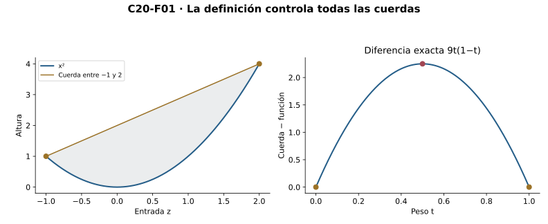
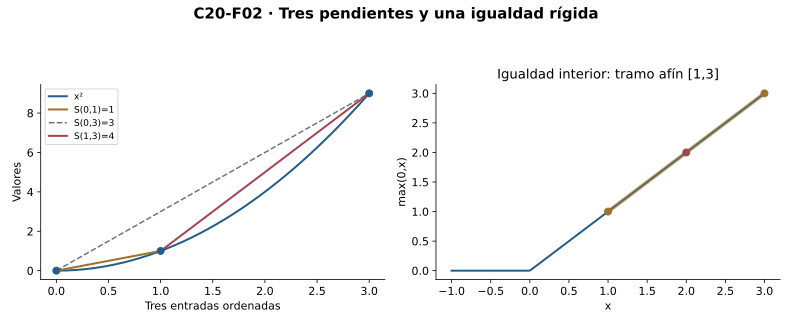
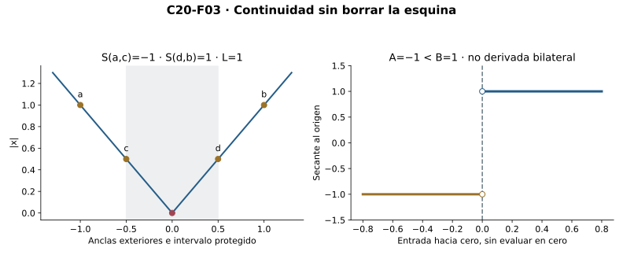
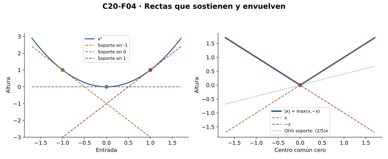
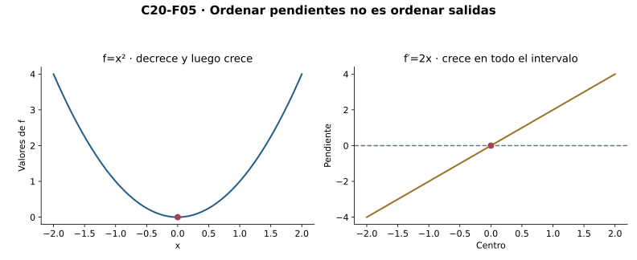
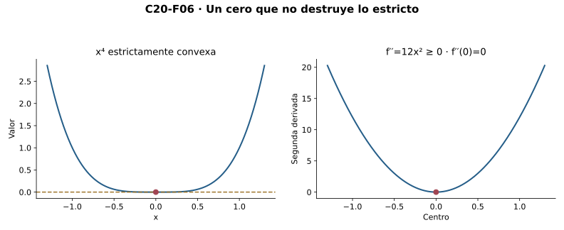
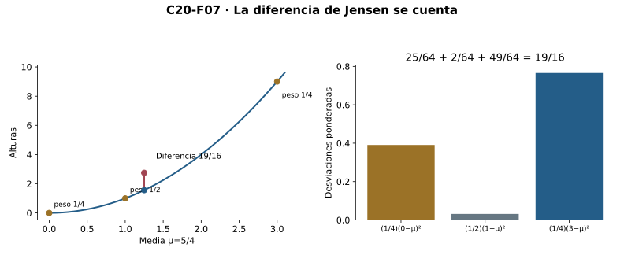
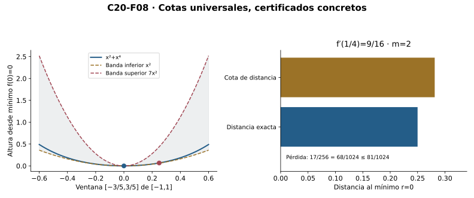

Capítulo 20 — Convexidad y control por tangentes y secantes
Índice del libro · Capítulo 20 · Ejercicios · Soluciones · Soluciones de microcontroles
Una cuerda compara tres salidas antes de que exista una derivada. Partiendo de esa comparación construiremos continuidad interior, pendientes laterales y rectas de soporte. Después conectaremos estas herramientas con el orden de la primera derivada y el signo de la segunda. Las desigualdades finitas y los certificados de error serán consecuencias demostradas, con sus hipótesis y límites.
C18 aporta derivadas y sus reglas; C19 transporta pendientes por Lagrange, signo y constancia. Completitud para supremos, continuidad y raíces son interfaces heredadas de C03/C10/C14. C16 garantiza mínimos sólo cuando se añade continuidad sobre compacto. No se usa Taylor, integración ni nuevas reglas para potencias reales generales. Convexidad no supone derivabilidad o continuidad de borde; las extensiones al borde se justifican por separado.
20.1. Un segmento impone un orden
¿Qué significa que una curva quede por debajo de las cuerdas que unen sus puntos? Antes de hablar de derivadas, fijemos dos entradas \(a,b\) de un intervalo \(I\) y un peso \(t\in[0,1]\). La entrada intermedia es \(z=(1-t)a+tb\); el carácter intervalar garantiza que pertenece al dominio. La altura interpolada es \((1-t)f(a)+tf(b)\). La comparación enfrenta dos procedimientos distintos: evaluar después de combinar entradas o combinar después de evaluar.
Una función real finita \(f:I\to\mathbb R\) es convexa si, para todo \(a,b\in I\) y todo \(t\in[0,1]\),
\[f((1-t)a+tb)\le(1-t)f(a)+tf(b).\]
Es estrictamente convexa si la desigualdad es estricta cuando \(a\ne b\) y \(0<t<1\). Las exclusiones son necesarias: si se repite la entrada o un peso es cero, ambos procedimientos coinciden. Cóncava significa la desigualdad opuesta; equivale a que \(-f\) sea convexa. Estrictamente cóncava se define de la misma forma. No añadimos continuidad o derivabilidad a estas definiciones. En un singleton la condición estricta es vacía; los teoremas diferenciales siguientes trabajarán sobre intervalos abiertos no vacíos.
Para el cuadrado no necesitamos un dibujo ni una segunda derivada. Una expansión da
\[ (1-t)a^2+tb^2-((1-t)a+tb)^2=t(1-t)(b-a)^2. \]
Todos los factores son no negativos y el producto es positivo bajo las condiciones estrictas. Así \(x^2\) es estrictamente convexa sobre \(\mathbb R\). Una recta \(A+Bx\) produce diferencia cero: es convexa y cóncava, pero no estrictamente convexa en ningún intervalo con dos entradas. Añadir una recta a una función conserva exactamente sus diferencias de convexidad.
El valor absoluto también es convexo. La desigualdad triangular y la homogeneidad para pesos no negativos dan
\[|(1-t)a+tb|\le(1-t)|a|+t|b|.\]
No es estrictamente convexo: dos entradas positivas distintas quedan en un mismo tramo recto. Además no es derivable en cero, como muestra C18. La convexidad contiene curvas con esquinas y por ello no puede definirse exigiendo tangentes.
Las combinaciones \(\alpha f+\beta g\) de funciones convexas son convexas para \(\alpha,\beta\ge0\): multiplicamos sus dos desigualdades por pesos no negativos y sumamos. Un coeficiente negativo puede invertir el orden; no se omite esta condición. La restricción a un subintervalo conserva la propiedad porque conserva todas sus combinaciones. La orientación del orden, no la impresión de que una curva «sube», define convexidad: \(x^2\) decrece a la izquierda de cero y sigue siendo convexa.

La figura representa la diferencia algebraica ya calculada. Una colección finita de cuerdas no certifica una condición que cuantifica sobre todas las entradas y todos los pesos.
Microcontroles
- ¿Qué debe contener el dominio para comparar dos entradas por convexidad?
- ¿Qué procedimientos compara la desigualdad de convexidad?
- ¿Por qué se excluyen pesos extremos y entradas iguales al exigir convexidad estricta?
- ¿Qué diferencia de convexidad tiene el cuadrado?
- ¿Puede una función ser convexa y cóncava?
- ¿El valor absoluto es estrictamente convexo?
- ¿La convexidad exige derivabilidad?
- ¿Qué signo permite sumar desigualdades de convexidad con coeficientes?
20.2. Tres pendientes y una rigidez
La definición puede convertirse en una regla de orden para tres secantes. Si \(u<v<w\) pertenecen a \(I\), escribimos
\[S(u,v)=\frac{f(v)-f(u)}{v-u},\qquad v=\frac{w-v}{w-u}u+\frac{v-u}{w-u}w.\]
Los denominadores son positivos. Aplicar convexidad en \(v\) y multiplicar por \(w-u\) produce
\[(w-u)f(v)\le(w-v)f(u)+(v-u)f(w).\]
Restar los términos correspondientes y dividir por productos positivos da
\[S(u,v)\le S(u,w)\le S(v,w).\]
También \(S(u,w)\) es la media ponderada de \(S(u,v)\) y \(S(v,w)\), con pesos \((v-u)/(w-u)\) y \((w-v)/(w-u)\). Por ello las dos desigualdades anteriores equivalen a \(S(u,v)\le S(v,w)\). En sentido inverso, esta última desigualdad, válida para todo triple ordenado, se reorganiza en la desigualdad de convexidad en una entrada interior. Las entradas coincidentes y los pesos extremos dan igualdad directamente. Hemos probado la equivalencia sin derivadas.
Con convexidad estricta, para cada triple distinto ambas desigualdades son estrictas. El mismo álgebra prueba la recíproca. Para el cuadrado, \(S(u,v)=u+v\); en \(0<1<3\) las pendientes son \(1,3,4\). La secante larga no tiene por qué coincidir con la de un tramo pequeño.
La igualdad puede ser más informativa que una cota. Supongamos que \(f\) es convexa sobre \([a,b]\), \(a<b\), y que en algún \(z\in(a,b)\) coincide con la recta de la cuerda \(\ell\). Definamos \(h=\ell-f\). Convexidad de \(f\) equivale a concavidad de \(h\); además \(h\ge0\) en el segmento y \(h(a)=h(z)=h(b)=0\).
Si \(a<x<z\), expresamos \(z\) como combinación con pesos positivos de \(x\) y \(b\). Concavidad da \(0=h(z)\ge\theta h(x)+(1-\theta)h(b)=\theta h(x)\), donde \(\theta>0\). Así \(h(x)=0\). Para \(z<x<b\) expresamos \(z\) como combinación de \(a\) y \(x\) y obtenemos el mismo resultado. Los bordes y \(z\) ya tenían valor cero. Entonces \(f=\ell\) en todo \([a,b]\).
Este argumento demuestra la rigidez de una cuerda: una igualdad interior en una función convexa obliga a un tramo afín completo. En consecuencia, una función convexa es estrictamente convexa exactamente cuando no es afín en ningún subsegmento no degenerado. No se requiere segunda derivada, y un tramo recto puede aparecer sin que toda la función sea una recta.

Para controlar pendientes con un extremo fijo se reutiliza el mismo triple. \(S(c,x)\) no decrece cuando \(x>c\) aumenta; \(S(x,c)\) no decrece cuando \(x<c\) aumenta. Estas dos familias tienen sentidos de aproximación distintos al llegar a \(c\), que serán decisivos en la sección siguiente.
Microcontroles
- ¿Qué coeficiente expresa \(v\) entre \(u<v<w\)?
- ¿Cuál es el orden de las tres pendientes para una función convexa?
- ¿Por qué la secante larga queda entre las cortas?
- ¿Basta el orden \(S(u,v)\le S(v,w)\) para todos los triples?
- ¿Qué ocurre en el orden de pendientes si la convexidad es estricta?
- ¿Qué fuerza una igualdad interior con una cuerda de una función convexa?
- ¿Cómo se excluye un punto elevado de \(h=\ell-f\) al tener \(h(z)=0\) interior?
- ¿Cómo se caracteriza convexidad estricta sin derivadas?
20.3. La convexidad fabrica continuidad
¿Puede la desigualdad entre tres pendientes construir por sí sola un radio de continuidad? Sea \(f\) convexa y finita sobre un intervalo \(I\). Fijemos un segmento \([c,d]\) en su interior, con \(c<d\), y elijamos entradas \(a<c<d<b\) de \(I\). Para \(c\le x<y\le d\), las comparaciones de la sección anterior dan
\[S(a,c)\le S(a,x)\le S(x,y)\le S(y,b)\le S(d,b).\]
Cuando \(x=c\) o \(y=d\), una comparación es simplemente igualdad; no se divide por cero. Los números exteriores son finitos porque los valores de \(f\) lo son y los denominadores son positivos. Definamos
\[L=\max\{|S(a,c)|,\ |S(d,b)|\}.\]
La banda de pendientes implica \(|f(y)-f(x)|\le L|y-x|\). Para entradas iguales el incremento es cero, y para entradas invertidas usamos simetría. Así \(f\) es Lipschitz sobre todo segmento que tenga un margen interior a ambos lados. Si \(L>0\), \(\delta=\varepsilon/L\) prueba uniformidad en ese segmento; si \(L=0\), la función es constante allí y cualquier radio sirve. Al colocar un centro interior dentro de uno de estos segmentos se obtiene continuidad en ese centro. No hemos usado ninguna derivada ni un teorema que ya suponga continuidad.
La conclusión es local en el interior. En \([0,1]\), la función \(f(0)=1\) y \(f(x)=0\) para \(x>0\) es convexa: una combinación interior positiva tiene salida cero y la altura combinada es no negativa; si la entrada combinada es cero, las entradas con peso positivo son cero y se obtiene igualdad. Sin embargo no es continua en el borde cero. La convexidad finita no autoriza extender automáticamente la continuidad a los extremos incluidos.
Hay también pendientes laterales bien determinadas. Fijemos ahora \(c\in\operatorname{int}I\) y consideremos
\[A=\sup_{x<c,\ x\in I}S(x,c),\qquad B=\inf_{y>c,\ y\in I}S(c,y).\]
Las familias no son vacías. Una secante fija de la derecha acota superiormente todas las de la izquierda, y una secante fija de la izquierda acota inferiormente todas las de la derecha. Valores de cada familia aportan la otra cota necesaria, de modo que \(A\) y \(B\) son reales finitos. Cada secante izquierda es menor o igual que cada secante derecha: tomando supremo e ínfimo resulta \(A\le B\).
Para identificar el límite izquierdo, dado \(\varepsilon>0\) el supremo proporciona un \(x_0<c\) con \(A-\varepsilon<S(x_0,c)\le A\). Si \(x_0<x<c\), la monotonía con extremo fijo encierra \(S(x,c)\) entre esos mismos valores. El radio \(c-x_0\) prueba el límite \(A\) cuando \(x\uparrow c\). A la derecha, el ínfimo proporciona \(y_0>c\) con \(B\le S(c,y_0)<B+\varepsilon\); para \(c<y<y_0\) la secante queda entre \(B\) y esta cota. El radio \(y_0-c\) prueba el límite \(B\).
Por definición de cociente incremental, \(f'_-(c)=A\) y \(f'_+(c)=B\). La derivada bilateral existe exactamente cuando \(A=B\): si coinciden, el mínimo de los dos radios sirve a ambos lados; si existe una derivada, sus dos restricciones tienen el mismo límite. Para \(|x|\) en cero se obtienen \(A=-1\) y \(B=1\). La continuidad fabricada por convexidad admite una esquina.

Estas derivadas laterales finitas se afirman en centros interiores. No se ha probado finitud de pendientes laterales en bordes ni una constante Lipschitz para todo un intervalo abierto no acotado.
Microcontroles
- ¿Qué margen se necesita para una constante Lipschitz en \([c,d]\)?
- ¿Qué constante construye la banda de secantes?
- ¿Qué radio sirve cuando \(L>0\)?
- ¿Qué hacer si \(L=0\)?
- ¿La convexidad finita garantiza continuidad en un borde incluido?
- ¿Qué límites laterales de pendientes existen en un centro interior?
- ¿Qué dato del supremo construye el radio del límite izquierdo?
- ¿Cuándo existe la derivada bilateral de una función convexa en un centro interior?
20.4. Rectas que sostienen y una envolvente
Una cuerda domina la curva desde arriba entre sus extremos. Busquemos ahora rectas que queden debajo en todo el dominio. Con \(c\) interior y \(A=f'_-(c)\le B=f'_+(c)\) definidos antes, tomemos cualquier \(p\in[A,B]\) y la recta
\[\ell_{c,p}(x)=f(c)+p(x-c).\]
Si \(x>c\), tenemos \(S(c,x)\ge B\ge p\) y por ello \(f(x)-f(c)\ge p(x-c)\). Si \(x<c\), \(S(x,c)\le A\le p\); al multiplicar por \(x-c<0\), el orden se invierte y se obtiene la misma desigualdad. En \(x=c\) hay igualdad. Por tanto \(\ell_{c,p}(x)\le f(x)\) para todo \(x\in I\).
La recíproca caracteriza todas las pendientes de soporte en ese centro. Si una recta que pasa por \((c,f(c))\) queda debajo para todas las entradas, a la derecha obliga a \(p\le S(c,x)\) y por tanto \(p\le B\). A la izquierda obliga a \(S(x,c)\le p\), luego \(A\le p\). El conjunto de pendientes permitidas es exactamente el intervalo cerrado \([A,B]\), sin asumir que haya una tangente única.
Cuando \(f\) es derivable en \(c\), \(A=B=f'(c)\) y la única recta de soporte que pasa por ese punto es la tangente:
\[f(x)\ge f(c)+f'(c)(x-c).\]
En el valor absoluto, en cero hay toda una familia \(px\), \(-1\le p\le1\); las rectas extremas \(x\) y \(-x\) sostienen sus dos tramos. Para el cuadrado, la tangente en \(c\) es \(2cx-c^2\) y la diferencia \(x^2-(2cx-c^2)=(x-c)^2\) exhibe el soporte. El soporte no se restringe a un radio pequeño: controla todas las entradas del mismo intervalo.
Una función convexa finita sobre un intervalo abierto no vacío es la envolvente superior de sus rectas de soporte:
\[f(x)=\sup_{c\in I,\ p\in[f'_-(c),f'_+(c)]}\ell_{c,p}(x).\]
Para un \(x\) fijo, todas las rectas están debajo de \(f(x)\) y la familia no es vacía. La recta construida con \(c=x\) y cualquier pendiente del intervalo permitido alcanza exactamente \(f(x)\). Se justifican así existencia del supremo e igualdad. Esta formulación en un intervalo abierto evita atribuir un soporte finito a un borde donde puede no existir.
En sentido inverso, sea una familia no vacía de rectas \(\ell_j\) cuyo supremo \(F(x)\) sea real finito para todas las entradas de un intervalo. Cada recta satisface \(\ell_j((1-t)a+tb)=(1-t)\ell_j(a)+t\ell_j(b)\le(1-t)F(a)+tF(b)\). Tomar el supremo da convexidad de \(F\). Ni siquiera se requiere que alguna recta alcance el supremo. Por ejemplo \(|x|=\max\{x,-x\}\).

Dos envolventes diferentes participan en el control: las cuerdas sobre cada segmento por arriba y las rectas de soporte por abajo. Confundir sus direcciones cambia las desigualdades. Si \(f\) es estrictamente convexa y derivable, la tangente toca sólo en su centro: una segunda igualdad forzaría un tramo afín, por convexidad y la rigidez de la cuerda aplicada a la diferencia respecto del soporte.
Microcontroles
- ¿Qué pendientes sostienen una función convexa desde un centro interior?
- ¿Qué cambia al multiplicar una comparación de pendientes por \(x-c<0\)?
- ¿Qué pendiente de soporte queda si la función es derivable?
- ¿Qué familia de rectas sostiene \(|x|\) en cero?
- ¿Qué identidad verifica el soporte de la tangente del cuadrado?
- ¿Por qué el supremo de todos los soportes recupera \(f(x)\) en un intervalo abierto?
- ¿Debe alcanzarse el supremo de una familia de rectas para que sea convexo?
- ¿En qué dirección controla una cuerda y en cuál un soporte?
20.5. Derivadas ordenadas, curvas convexas
Sea \(I\) un intervalo abierto no vacío y \(f\) derivable en todos sus puntos. La convexidad equivale a que \(f'\) sea no decreciente. Las dos implicaciones usan herramientas diferentes.
Si \(f\) es convexa, para \(x<y\) las secantes al acercarse a sus extremos dan
\[f'(x)\le S(x,y)\le f'(y).\]
La primera cota se obtiene de las secantes derechas con centro \(x\), y la segunda de las izquierdas con centro \(y\), usando los límites de la sección20.3. Por transitividad \(f'(x)\le f'(y)\) para cualquier par ordenado. No se supone continuidad de \(f'\).
Supongamos en sentido inverso que \(f'\) es no decreciente. Para \(u<v<w\) de \(I\), cada subsegmento está en el dominio; la derivabilidad implica continuidad en sus bordes por C18. Lagrange de C19 proporciona \(c\in(u,v)\) y \(d\in(v,w)\) con \(S(u,v)=f'(c)\) y \(S(v,w)=f'(d)\). Como \(c<d\), el orden de \(f'\) implica \(S(u,v)\le S(v,w)\). La equivalencia algebraica de20.2 da convexidad. Los puntos son dos testigos distintos de valor medio, y su ubicación en segmentos vecinos permite compararlos; no se afirma que coincidan.
Hay otra equivalencia útil: \(f\) es convexa si y sólo si todas sus tangentes son soportes globales. Una dirección fue demostrada en20.4. Para la otra, fijemos \(a<b\) y \(z=(1-t)a+tb\), con \(0<t<1\). Aplicamos el soporte en \(z\) a las entradas \(a,b\), multiplicamos por \(1-t,t\) y sumamos. Los términos con \(f'(z)\) se cancelan porque \((1-t)(a-z)+t(b-z)=0\). Resulta \((1-t)f(a)+tf(b)\ge f(z)\). Las combinaciones triviales dan igualdad.
La versión estricta exige cuidado. Si \(f'\) es estrictamente creciente, los dos centros \(c<d\) de valor medio producen pendientes estrictamente ordenadas y por20.2 \(f\) es estrictamente convexa. Si \(f\) es estrictamente convexa, ya sabemos que \(f'\) no decrece. Si para algún \(x<y\) ocurriera \(f'(x)=f'(y)\), el orden encerraría todas las derivadas entre ambos en el mismo valor \(k\). C19 aplicado a \(f(t)-kt\) lo haría constante en \([x,y]\). Ese tramo afín contradice la convexidad estricta. Así \(f'\) es estrictamente creciente.
Una derivada no decreciente no equivale a una función no decreciente. El cuadrado tiene \(f'=2x\) estrictamente creciente, pero \(f\) decrece en \((-\infty,0]\) y crece en \([0,\infty)\). Por otro lado, el cubo es estrictamente creciente y no es convexo en toda la recta: su derivada \(3x^2\) no es no decreciente en toda ella. El signo de \(f'\) controla la monotonía de \(f\); el orden de \(f'\) controla su convexidad.

Sobre \([a,b]\), si \(f\) es continua incluyendo los extremos y derivable en \((a,b)\), el orden de la derivada interior basta para convexidad en todo el segmento: la prueba por los dos subsegmentos de Lagrange conserva sus hipótesis incluso cuando \(u=a\) o \(w=b\). Las tangentes en centros interiores sostienen también los bordes por paso al límite. Sin continuidad en bordes esta extensión es falsa; \(f(0)=-1\) y \(f(x)=0\) para \(0<x\le1\) tiene derivada interior cero pero viola la cuerda de0 a1.
Microcontroles
- ¿Qué orden tiene \(f\prime\) cuando \(f\) es convexa y derivable en un intervalo abierto?
- ¿Dónde quedan los dos centros de Lagrange usados para probar convexidad?
- ¿Se exige continuidad de \(f\prime\) en esa prueba?
- ¿Qué cancela los términos de pendiente en la prueba por soporte en \(z\)?
- ¿Qué implica \(f\prime(x)=f\prime(y)\) para \(x<y\) si \(f\prime\) no decrece?
- ¿La derivada creciente obliga a que la propia función crezca?
- ¿Una función estrictamente creciente es necesariamente convexa?
- ¿Qué hipótesis adicional extiende el criterio a los extremos de \([a,b]\)?
20.6. La segunda derivada y sus límites
La segunda derivada es la derivada de la función \(f'\) en los centros donde esta nueva derivada existe. No basta con que exista \(f'\) en un solo punto. Supongamos que \(f\) es dos veces derivable en cada punto de un intervalo abierto \(I\). Entonces
\[f\text{ es convexa en }I\quad\Longleftrightarrow\quad f''(x)\ge0\text{ para todo }x\in I.\]
Si \(f''\ge0\), C19 aplicado a la función \(f'\) la hace no decreciente: esta función es derivable en \(I\), y por ello continua sobre cada segmento interior. La equivalencia de20.5 hace convexa a \(f\). En sentido inverso, si \(f\) es convexa, \(f'\) no decrece; donde \(f'\) es derivable, todos sus cocientes incrementales son no negativos, tanto por incrementos positivos como negativos. Su límite \(f''\) también es no negativo. No se ha pedido continuidad de \(f''\).
Si \(f''>0\) en todos los puntos, C19 da crecimiento estricto de \(f'\) y por ello convexidad estricta. La recíproca estricta es falsa: \(f(x)=x^4\) tiene \(f'(x)=4x^3\) estrictamente creciente, así es estrictamente convexa, pero \(f''(0)=0\). El criterio débil \(f''\ge0\) caracteriza convexidad; el criterio positivo es una condición suficiente más fuerte para la estricta.
Aplicar los mismos resultados a \(-f\) demuestra concavidad cuando \(f''\le0\), y concavidad estricta si \(f''<0\). En \((0,\infty)\), \(f(x)=1/x\) tiene \(f'=-1/x^2\) y \(f''=2/x^3>0\): es decreciente y estrictamente convexa. La raíz \(g(x)=\sqrt{x}\) tiene \(g'=1/(2\sqrt{x})\) y \(g''=-1/(4x^{3/2})<0\) sobre \((0,\infty)\), de modo que es estrictamente cóncava allí. Estas fórmulas se derivan con las reglas de C18, cocientes y cadena, sin asumir reglas para potencias reales arbitrarias. Su continuidad en cero permite pasar las desigualdades al segmento que incluye ese borde.
En un centro \(c\) derivable de una función convexa, \(f'(c)=0\) garantiza un mínimo global: el soporte horizontal dice \(f(x)\ge f(c)\) para todas las entradas. Si la convexidad es estricta, el mínimo es único. Si un mínimo se alcanza en un centro interior derivable, Fermat de C19 da la condición necesaria \(f'(c)=0\). En una frontera no se exige esta igualdad: la identidad en \([0,1]\) tiene su mínimo en cero y derivada relativa uno.
Un signo de segunda derivada en un único centro no es un certificado global. La función \(q(x)=x^2-x^4\) satisface \(q''(0)=2\), pero \(q''(x)=2-12x^2\) es negativa, por ejemplo, en1; no es convexa en toda la recta. Tampoco \(f''(c)=0\) determina un extremo ni un cambio de convexidad: \(x^4\) es convexa a ambos lados de cero, mientras \(x^3\) es cóncava a la izquierda y convexa a la derecha, y en cero no tiene extremo. Las hipótesis sobre un intervalo no se reemplazan por una muestra central.

0 alrededor del origen.">Convexidad tampoco garantiza que el mínimo exista. Sobre \((0,1)\), \(x^2\) es estrictamente convexa y tiene ínfimo cero, pero no lo alcanza. C16 proporciona existencia sobre segmentos compactos continuos; cuando se usa, debe nombrarse esa condición adicional.
Microcontroles
- ¿Qué significa que exista \(f\prime\prime(c)\)?
- ¿Qué condición caracteriza convexidad cuando \(f\) es dos veces derivable en todo un intervalo abierto?
- ¿Por qué puede aplicarse C19 a \(f\prime\) sin pedir continuidad de \(f\prime\prime\)?
- ¿Es necesaria \(f\prime\prime>0\) en todos los puntos para convexidad estricta?
- ¿Cómo puede \(1/x\) ser decreciente y estrictamente convexa en \((0,\infty)\)?
- ¿Qué certifica \(f\prime(c)=0\) en una función convexa derivable?
- ¿Qué decide por sí solo el valor \(f\prime\prime(c)=0\)?
- ¿La convexidad estricta garantiza un mínimo alcanzado en un intervalo abierto?
20.7. Jensen: combinar sin perder el control
La definición combina dos entradas. ¿Cómo controla una media finita? Si \(x_1,\ldots,x_n\) están en \(I\), los pesos \(\lambda_i\ge0\) suman1 y \(n\ge1\), entonces
\[f\left(\sum_{i=1}^n\lambda_i x_i\right)\le\sum_{i=1}^n\lambda_i f(x_i).\]
Esta es la desigualdad finita de Jensen. Antes de evaluar debemos comprobar que la combinación está en \(I\): la misma inducción que sigue construye cada media como combinación de entradas anteriores, y los intervalos conservan estas combinaciones.
Para \(n=1\) hay igualdad. Supongamos probado el caso \(n-1\) y pongamos \(s=\sum_{i<n}\lambda_i=1-\lambda_n\). Si \(s=0\), todos los pesos anteriores son cero y sólo queda \(x_n\). Si \(\lambda_n=0\), entonces \(s=1\) y aplicamos directamente la hipótesis inductiva. En el caso restante \(0<s<1\), definimos \(y=\sum_{i<n}(\lambda_i/s)x_i\). Los pesos normalizados son no negativos y suman1, luego \(y\in I\) y \(f(y)\le\sum_{i<n}(\lambda_i/s)f(x_i)\). Convexidad para \(sy+(1-s)x_n\) da \(f(\sum_i\lambda_i x_i)\le sf(y)+(1-s)f(x_n)\); sustituyendo la cota anterior termina el paso. Ninguna división por un peso nulo se ha ocultado.
Si \(f\) es estrictamente convexa, hay igualdad exactamente cuando todas las entradas con peso positivo son iguales. Una dirección es directa. Para la otra descartemos primero pesos cero. Si al menos dos entradas activas difieren, elijamos una con valor mínimo y agrupemos todas las entradas activas con ese mismo valor. Su peso total \(\theta\) satisface \(0<\theta<1\); la media \(y\) de las restantes es estrictamente mayor que ese mínimo, porque cada una es mayor y sus pesos son positivos. La convexidad estricta entre mínimo e \(y\), seguida de Jensen en cada grupo, hace estricta la desigualdad completa. El argumento usa sólo grupos finitos.
Para el cuadrado, con \(\mu=\sum_i\lambda_i x_i\), la diferencia tiene una identidad exacta:
\[\sum_i\lambda_i x_i^2-\mu^2=\sum_i\lambda_i(x_i-\mu)^2\ge0.\]
La expansión usa \(\sum_i\lambda_i=1\) y \(\sum_i\lambda_i x_i=\mu\). La identidad también identifica la igualdad: cada término con peso positivo debe anularse. Para \(\lambda=(1/4,1/2,1/4)\) y \(x=(0,1,3)\) se obtiene \(\mu=5/4\), media de cuadrados \(11/4\) y diferencia \(19/16\).
Para entradas positivas usamos la convexidad estricta de \(1/x\) ya demostrada:
\[\frac1{\sum_i\lambda_i x_i}\le\sum_i\frac{\lambda_i}{x_i}.\]
La media es positiva porque algún peso es positivo y todas las entradas lo son. Con pesos iguales, multiplicar por la suma positiva produce \((\sum_i x_i)(\sum_i1/x_i)\ge n^2\), con igualdad exactamente cuando todas las entradas son iguales. No se necesita logaritmo, exponencial ni una regla de potencias reales.

Los pesos negativos invalidan el mecanismo: con el cuadrado, pesos2 y−1 y entradas0 y1 dan una media−1, cuyo cuadrado1 no es menor o igual que la media de cuadrados−1. La suma de pesos sigue siendo1, pero la condición de signo se perdió. Este capítulo establece Jensen finito; no convierte una suma finita en una integral o en una media infinita.
Microcontroles
- ¿Qué condiciones tienen los pesos de Jensen finito?
- ¿Qué hacer si la suma \(s\) de los primeros pesos es cero?
- ¿Por qué la media normalizada de un grupo sigue en el dominio?
- ¿Cuándo hay igualdad en Jensen para una función estrictamente convexa?
- ¿Qué identidad da la diferencia de Jensen para el cuadrado?
- ¿Qué media resulta de pesos \((1/4,1/2,1/4)\) y entradas \((0,1,3)\)?
- ¿Por qué puede invertirse la media en Jensen para \(1/x\)?
- ¿Basta que los pesos sumen1 si alguno es negativo?
20.8. Bandas cuadráticas y mínimos certificados
Una tangente aporta una cota inferior a una función convexa. Si además controlamos la segunda derivada, podemos encerrar el error entre dos cantidades explícitas sin usar Taylor. Sea \(f\) dos veces derivable en un intervalo abierto \(I\), y supongamos \(m\le f''(x)\le M\) en todos sus puntos, con \(m\le M\) reales.
La función \(q_m(x)=f(x)-(m/2)x^2\) tiene segunda derivada \(f''-m\ge0\), luego es convexa por20.6. Su soporte en \(c\) da
\[q_m(x)\ge q_m(c)+q_m'(c)(x-c).\]
Sustituimos \(q_m'=f'-mx\) y agrupamos el polinomio cuadrático; resulta
\[f(x)-f(c)-f'(c)(x-c)\ge\frac m2(x-c)^2.\]
Del mismo modo \(q_M(x)=f(x)-(M/2)x^2\) es cóncava, y el soporte superior de una función cóncava produce la cota opuesta. Para todo \(c,x\in I\),
\[\frac m2(x-c)^2\le f(x)-f(c)-f'(c)(x-c)\le\frac M2(x-c)^2.\]
No se exige \(m\ge0\) para esta banda firmada. Si sólo \(|f''|\le K\), elegimos \(m=-K\) y \(M=K\) y obtenemos una cota absoluta \(K(x-c)^2/2\). Los límites de C18 por sí solos no aportaban este coeficiente cuadrático; aquí lo aportan las cotas universales y el criterio de convexidad.
El mismo truco aplicado a cuerdas, con \(z=(1-t)a+tb\), da
\[ \frac m2\,t(1-t)(b-a)^2 \le (1-t)f(a)+tf(b)-f(z) \le\frac M2\,t(1-t)(b-a)^2. \]
Se resta la desigualdad de convexidad de \(q_m\) y se usa la identidad del cuadrado de20.1; con \(q_M\) se usa concavidad. Se incluyen \(t=0,1\) sin división. Si \(f\) es continua en los extremos de un segmento y las cotas rigen en su interior, las dos funciones auxiliares son continuas allí y20.5 permite estas mismas bandas en todo el segmento.

Cuando \(m>0\), la cota inferior hace estrictamente convexa a \(f\), lo que suele llamarse convexidad fuerte con constante \(m\). Si existe un centro \(r\) con \(f'(r)=0\), es el único mínimo global. Para cualquier \(x\in I\), C19 aplicado a \(f'\) entre \(r\) y \(x\) da \(|f'(x)|\ge m|x-r|\): el signo del incremento se conserva y cada testigo tiene segunda derivada al menos \(m\). Así
\[|x-r|\le\frac{|f'(x)|}{m}.\]
Además, aplicando la banda inferior con centro \(x\) y entrada \(r\),
\[0\le f(x)-f(r)\le f'(x)(x-r)-\frac m2(x-r)^2\le\frac{f'(x)^2}{2m}.\]
La última cota se prueba completando el cuadrado en \(x-r\). Se exige la existencia del centro estacionario; \(m>0\) en un intervalo abierto no la garantiza, como muestra \(x^2\) sobre \((0,1)\).
Para \(f(x)=x^2+x^4\) sobre \([-1,1]\), \(f''=2+12x^2\) permite \(m=2\), \(M=14\); las hipótesis de borde se cumplen. El mínimo único es \(r=0\). En \(x=1/4\), \(f'(x)=9/16\) y \(f(x)=17/256\): el certificado de posición es \(|x-r|\le9/32\) y el de pérdida es \(f(x)-f(r)\le81/1024\). Los valores exactos \(1/4\le9/32\) y \(17/256=68/1024\le81/1024\) comprueban la consistencia; las pruebas, no esta muestra, garantizan las bandas universales.
La convexidad estricta no siempre ofrece una constante \(m>0\): \(x^4\) tiene segunda derivada cero en el origen, y para \(x\to0\) la razón \(|f'(x)|/|x|=4x^2\) tiende a cero. El control cuantitativo debe gastar una hipótesis cuantitativa. C21 podrá desarrollar modelos polinómicos generales; aquí las bandas proceden de restar un cuadrado y aplicar teoremas ya demostrados.
Microcontroles
- ¿Qué función auxiliar convierte \(f\prime\prime\ge m\) en convexidad?
- ¿Qué banda encierra la diferencia respecto de una tangente?
- ¿Debe ser \(m\) positivo para la banda firmada?
- ¿Qué factor aparece en el error de una cuerda?
- ¿Qué añade \(m>0\) al control cualitativo?
- ¿Qué certificado de posición da una pendiente residual?
- ¿Qué certificado de pérdida de valor acompaña al de posición?
- ¿La convexidad estricta permite siempre dividir por una constante uniforme \(m>0\)?
Índice del libro · Capítulo 20 · Ejercicios · Soluciones · Soluciones de microcontroles